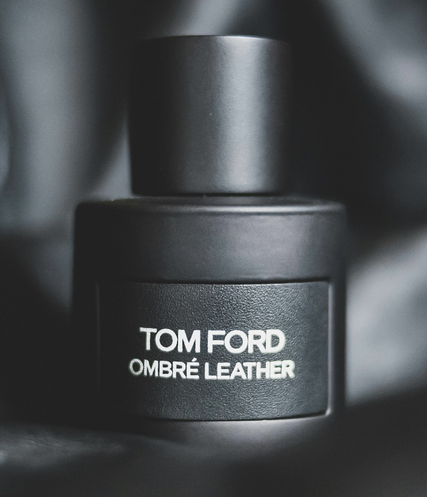

Afterfume is the home of all applied fragrances.
Afterfume has the ability to teach, show and rank fragrances past or present to help you decide your next scent.
Overall Trending Top 3!
| 1st | 2nd | 3rd |
|---|---|---|
|  |  |
 |
| Tom Ford Ombré Leather | Chanel BLEU de CHANEL | Dolce & Gabbana The One |
About Us
Why is it that you never get complimented anymore when you're wearing your favourite fragrance? Is it because that you have been using that same fragrance repeatedly? Or is it because of the same two bottle rotation that you cycle? Well, Afterfume is the place to be when finding that new scent that will draw compliments from anyone, at anytime, in anyplace.
What do we provide?
- ~ Current trending fragrances that are topping the charts ~
- ~ Looking back at last months Top 3 fragrances ~
- ~ Information on the applied fragrance history, making & types ~
- ~ Our Top Priority fragrance and a watchlist below for close competitors ~
- ~ Submission form for you to tell us YOUR go to and wishlist! ~
Learn a little about the History, Makings and Types of fragrance.
History
Egyptians were responsible for the origin of perfume. They utilized scents in everything from religious ceremonies to burial preparations and even daily wear. The rich elites of Egyptian society, would adorn themselves with aromas like lily to denote their status. Archaeologists recently uncovered a perfume factory from 2,000 BC, located in Cyprus, which seemed to have specialized in the production of scents like coriander, laurel, myrtle, lavender, and rosemary. In 1190, perfume began to be produced commercially in Paris where it blossomed into a massive industry.
Making Perfume
The desired scents, in specific quantities, are combined with either ethanol or ethanol and water. The concentration of the scent depends on what kind of perfume is being made. True perfume, for example, may have a composition of up to 40% of scent material. Eau de Parfum will only have up to 20% of scent material in its mixture, resulting in a lighter, more subtle aroma.
Perfume Types
Esprit de Parfum, which is comprised of up to 30% of aromatics. Eau de Toilette will never have more than a 15% concentration. As to whether a scent appeals more to a male or female demographic, the identifier is in the fragrance notes. The most common fragrance families are floral, chypre (scents like bergamot), oceanic, citrus, fruit, and gourmand (scents like vanilla and honey), and a perfume is defined by the concentration and dominance of its contained scent notes.